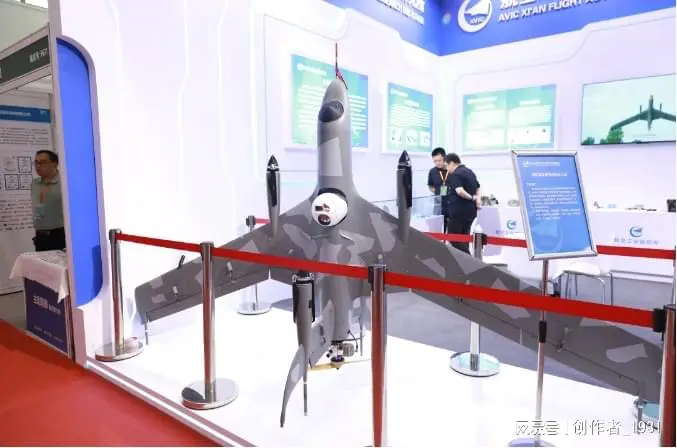
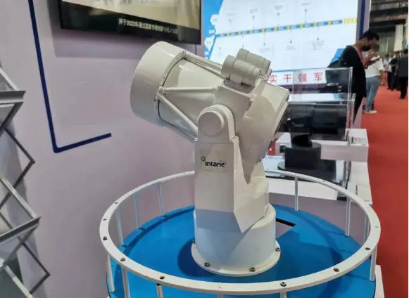

当前，以信息技术为核心的高新技术正在推动着世界范围的一场新的军事革命,建设信息化国防已经成为新世纪各国国防现代化建设所追求的重要目标。军民共用以及军用和民用工业的一体化趋势，是比军转民模式更具有发展优势的新趋势，它必将对未来的世界经济、政治、军事国防等领域产生重要影响。
6月5日，由中国和平利用军工技术协会、全国工商联科技装备业商会共同主办，北京企发展览服务有限公司独家承办的2024中国国防信息化装备与技术博览会在京拉开帷幕。聚焦现场，尖端展品璀璨登场，国防科技之光熠熠生辉。本次展会设立了10大主题展区，涵盖了军民融合科技装备、军用特种电子元器件、军工智能制造装备、军工配套及精密加工、军民两用新材料、军工装备试验与测试、信创和网络安全装备、智能安防及无人装备、军事信息通信技术装备、军事后勤保障装备等在内的多个专题展区领域，全方位展示国防行业的全产业链发展的新趋势、新风采、新高度！

“通过将优秀的科技成果转化为实际生产力，为国防和军队现代化建设注入新的活力。”空军装备研究院原研究室主任王子刚表示，作为加强军民融合、促进信息沟通的重要桥梁，国防信息化展为国防信息化领域的交流与合作搭建了一个互动平台。军民双方可以共同探讨信息化建设的未来趋势，分享成功经验，携手推动国防科技的进步。同时，国防信息化展还是促进军民两用科技成果转移转化和产业化的强大“倍增器”。

中船高级工程师石志国表示，作为备受瞩目的军工行业盛会，本次博览会多项参数继续保持高水平“发挥”。作为兼具规模和影响力的军民两用科技装备产业品牌盛会，博览会遵循市场发展趋势，给国内外军民两用科技装备行业创造提升品牌度和开拓市场的一个契机。充分发挥其传递市场信息与交流先进技术的窗口作用，把脉行业发展方向。共享国际化大平台，共拓军民两用科技装备大市场。
尖端技术的军民共用趋势，已成为各国增强国防实力和提高经济竞争力的一种重要举措。
据主办方介绍，本届展会涉及12大主题展区，涵盖了军民融合科技装备、特种电子元器件、军工智能制造装备、军工配套及精密加工、军民两用新材料、军工装备试验与测试、信息通信装备、信创和网络安全、智能安防、无人系统装备、后勤保障装备、反恐应急装备等在内的多个专题展区领域，全方位展示国防科技的前沿与尖端。